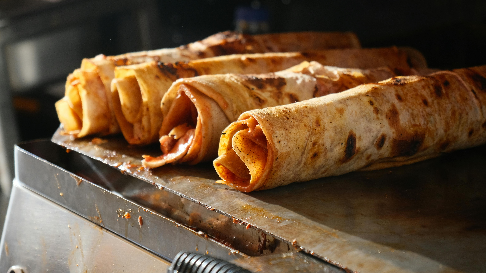

Crispy Sheet Pan BBQ Ranch Chicken Tacos

Dinner tonight is crispy sheet pan BBQ ranch chicken tacos, made by baking chicken breasts in BBQ sauce until it
shreds easily, and topping baked tortillas with chicken, cheese, shredded lettuce and tomato, and a delicious
ranch sauce.
| Prep Time: |
Cook Time: |
Total Time: |
| 15 mins |
1 hr 30 mins |
1 hr 45 mins |
| Servings: |
| 6 to 8 |
Ingredients
- 1 1/2 pounds skinless, boneless chicken breasts
- 1 (1 ounce) packet dry ranch seasoning
- 2/3 cup barbecue sauce
- 3 tablespoons avocado oil or olive oil
- 12 corn tortillas
- 8 ounces Cheddar cheese, shredded
- 1 cup shredded lettuce, or as needed
- 1/4 cup chopped dill pickles, or as needed
- 1/4 cup sour cream
- 2 tablespoons mayonnaise
- 2 teaspoons pickle brine
Directions
- Step 1 Preheat the oven to 325 degrees F (165 degrees C). Place chicken in a small baking
dish. Reserve 1 tablespoon ranch seasoning and sprinkle remaining seasoning over chicken. Pour barbecue
sauce over chicken, cover with foil.
- Step 2 Bake in the preheated oven until chicken is done and shreds easily with a fork, 50
to 60 minutes.
- Step 3 Increase oven to 400 degrees F (200 degrees C). Working with 2 pans or in batches
with 1 pan, lightly coat a rimmed baking sheet with avocado oil.
- Step 4 Bake tortillas in the oven for 4 minutes.
- Step 5 Meanwhile, shred chicken and return to the pan with juices; set aside. Top tortillas
evenly with shredded chicken and cheese.
- Step 6 Bake tacos until crisp, 8 to 10 minutes. Fold tortillas in half to form a taco and
top with shredded lettuce and pickles.
- Step 7 Stir together remaining ranch seasoning with sour cream, mayonnaise, and pickle
brine. Serve sauce with tacos.
Home